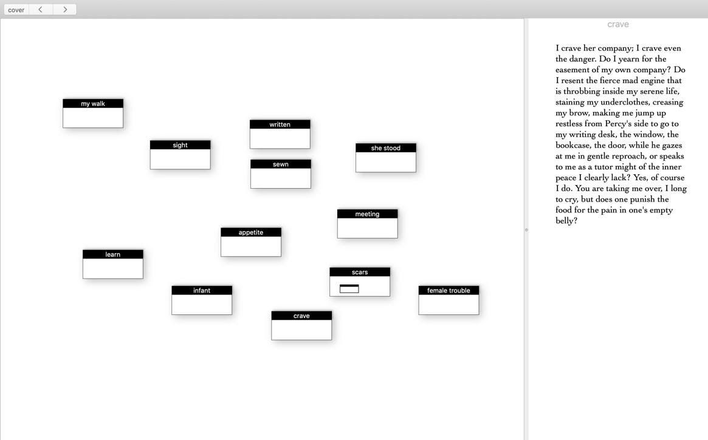

L’ACCEPTATION DE LA « MONSTRUOSITÉ » DE
SOI DANS L’ŒUVRE LITTÉRAIRE ET
NUMÉRIQUE
:
Patchwork Girl
Littérature, technologie(s), (cyber)féminisme et antiracisme
Sayaka Araniva-Yanez
Madioula Kébé-Kamara
Département d’études littéraires, UQÀM
Département d’études littéraires, UQÀM-IREF
“By the late twentieth century, our time, a mythic time, we are all
chimeras, theorized and fabricated hybrids of machine and organism; in
short, we are cyborgs.”
“Cyborg writing must not be about the Fall, the imagination of a
once-upon-a-time wholeness before language, before writing, before Man.
Cyborg writing is about the power to survive, not on the basis of
original
innocence, but on the basis of seizing
the tools to mark the world that marked them as other.”
Le Manifeste du Cyborg, Donna Haraway (1985)
Diplômée de diverses universités en arts visuels et en création littéraire, l’artiste Shelley Jackson parvient aisément à créer un portrait numérique de la multidisciplinarité. Ainsi, c’est en 1995 qu’elle nous offre Patchwork Girl, une œuvre littéraire, multilinéaire et digitale qui s’inscrit pertinemment dans l’histoire de l’hypertexte. Principalement réalisée à l’aide du logiciel Storyspace, l’édition originale fut rééditée, puis rediffusée par les éditions Eastgate Systems en 2016, et c’est cette dernière parution qui se trouve au cœur de notre analyse. Tandis que la page titre de l’œuvre suggère une filiation directe avec Frankenstein ou le Prométhée moderne de Mary Shelley, Patchwork Girl met plutôt en scène Mary Shelley elle-même ainsi que sa création, une compagne originalement imaginée à l’intention du monstre du Dr Frankenstein, mais qui, cette fois, s’engage émotionnellement avec celle qui l’a fait naître, tout comme avec elle-même, révélant ainsi une certaine ambiguïté dans le récit. Les deux narratrices sont en symbiose, c’est-à-dire qu’elles représentent parfois, et tour à tour, la créature, la créatrice ou les deux en même temps. Cette éventualité parvient, par moments, à créer de la confusion chez le lectorat qui peine à distinguer les deux voix narratives. Ainsi, l’œuvre nous invite à plonger dans un récit labyrinthique et morcelé par lequel nous parvenons à reconnaître l’univers du roman de 1818, mais sous une forme radicalement novatrice. En effet, l’hypertextualité de l’œuvre agit autant à titre de support technique que d’affranchissement symbolique des méthodes d’édition traditionnelles, et le mode interactif du récit de Jackson permet d’accéder à une pluralité d’expériences de lecture.
L’intertextualité se trouve aussi dans les thèmes de la monstruosité et du rapiéçage. Qu’elle passe par l’évocation de membres du corps humain ou par la pluralité des voix, l’œuvre est, tant dans son fond que dans sa forme, un ensemble hétéroclite composé d’une double narration et d’images morbides. Cette manière d’opérer rappelle les propos de Bouchardon qui stipule que l’hypertexte est « d’abord apparu comme une tentative de déconstruction du texte, comme une libération des contraintes et des artifices de la rhétorique classique subordonnée à la linéarité du discours ». 1 Cela débouche sur la mise en relief de l’identité hybride et de l’intersectionnalité qui découlent de la description d’un féminin différent et rejeté. Notre analyse tentera de mettre en valeur la juxtaposition des stratégies d’écriture employées par l’autrice Shelley Jackson ; de sa maîtrise de l’hyperlien à l’introduction d’une cyberintersectionnalité dans Patchwork Girl.
Interactivité et manipulations techno-sémiotiques dans Patchwork
Girl
Dès l’ouverture de Patchwork Girl, le lectorat se retrouve devant cinq possibilités d’accès au récit, soit les cinq chapitres du texte : « a Graveyard », « a Journal », « a Quilt », « a Story » et « & broken accents ». Ces différentes parties permettent au lectorat de recomposer plusieurs histoires rappelant la structure de Patchwork Girl elle-même. Ainsi, la « promesse de cet hypertexte » 2 est une reconstitution de l’identité du monstre, puisque les lectrices et lecteurs restituent également l’entièreté de la fiction. Le chapitre « a Graveyard » (ou le cimetière), lieu où se retrouvent les différentes parties du corps qui constituent le monstre, démontre une nécessité de « restitution de l’environnement qui a présidé à sa création ». 3 Dans celui-ci, la narratrice livre quelques instructions de lecture : « I am buried here. You can resurrect me, but only piecemeal. If you want to see the whole, you will have to sew me together yourself ». 4 À l’aide de différentes branches ou de différents chemins à emprunter, les divers morceaux découpés du corps renvoient à la « multiplicité d’histoires ou de textes-satellites » 5 qui concernent les personnages auxquels ils appartiennent. Ces textes sont alors introduits tels des hyperliens dans l’hypertexte de Jackson. Par leur entremise, le lectorat est confronté à la réalité ainsi qu’aux tergiversations de la créature et de ses différentes personnalités.
Ces sections s’ouvrent sur plusieurs lexies qui offrent de courts textes narrés à la première personne. Exposées aux côtés de ces fragments discursifs, ces lexies délimitent les contours d’un squelette qui, tout comme l’hypertexte, est similaire à la structure du rhizome de Deleuze et Guattari. 6 De cette manière, une lexie précède et détermine un réseau constitué de divers textes intrinsèquement liés à leur origine, une structure qui, puisqu’affichée, agit tel un patron de couture en donnant l’impression aux lectrices et lecteurs qu’il y a une « organisation hiérarchique » 7 ou un chemin prédéfini qui leur promet une finalité.
En parallèle, la lecture de l’œuvre par l’entremise d’une exploration hasardeuse des hyperliens « a Story » et « a Journal » permet d’atteindre des lexies cachées qui donnent accès aux pensées de la créatrice. Cette première narratrice s’exprime également au « je » et laisse le lectorat dans le flou en ce qui concerne sa relation avec le monstre. Ces lexies, les lectrices et lecteurs n’ont d’autre choix que de procéder par de nombreux essais et erreurs pour les dénicher. La lecture se transforme ainsi en « chasse aux œufs de Pâques » dans laquelle
[l]e lecteur clique sur différents mots pour découvrir si ces derniers en cachent d’autres. Enfin, une autre fonction du clic consiste à garder la machine textuelle en mouvement. Les théoriciens de l’hypertexte affirment que l’interactivité réduit le fossé entre le lecteur et l’auteur, mais la contribution du lecteur à la production du texte est surtout due au hasard. 8
La navigation dans l’œuvre devient plus excitante dès cet instant, puisqu’elle offre d’autres possibilités à ses lectrices et lecteurs.
Introduction à la cyberintersectionnalité dans Patchwork Girl
L’aspect introspectif du récit se poursuit et se complexifie dans ce réseau où le texte rend compte des liens tumultueux qui existent entre les deux narratrices du récit. Les lectrices et lecteurs se questionnent sur ce qui unit ces deux « je », sur ce qui les sépare et sur ce qui leur permet de former un « nous » féminin et pluriel. Dans la lexie « pity », le dialogue entre elles deux s’opère et se dévoile. Elles se découvrent par le regard de l’autre :
“For a moment this grotesque form disclosed its tender interior,” she said. She was leaning over me, yet her gaze flickered distractedly over my body and the disordered bedclothes. I could believe that she did not see me at all. “That moment ended, however.” “I did not mean to offend you”, I said. “I felt for an instant that I knew what it was like to be you, yet not forget myself, and I was filled with wonder [...]” 9
Leurs échanges se ponctuent d’une complicité et d’une altérité qui aboutissent à une compréhension mutuelle : « As she spoke, her fingers idly ran in zig-zag traces, in intersecting lines across my chest, and I realized that her anger had not lessened her feeling for me [...]. A cry broke from my throat and my eyes filled with tears. » 10 Les lectrices et lecteurs s’enroulent donc autour du personnage qui accepte la monstruosité de l’autre. Ainsi sensibilisé au sort du monstre, le lectorat en veut davantage et il explore en cliquant de plus belle sur d’autres lexies.
Dans cette œuvre écrite comme une autofiction, les narratrices rendent
compte de leur vécu relativement à la monstruosité. Un brouillage entre la
créatrice et sa créature s’opère, et la difficulté d’accès au récit de
chacune peut s’interpréter telle une volonté de distanciation, de l’une
comme de l’autre. À la fois tentées de ne pas se voir dans le rejet
réciproque de la monstruosité et invitées à se soulever dans une abnégation
commune – pour mieux se sentir, se toucher, s’aimer –, elles arrivent
conjointement à exposer leurs diverses blessures dans une vulnérabilité
totale et à dévoiler leurs liens très étroits avec la noirceur et la
difformité. Elles parviennent à embrasser leurs corps et la violence qui les
habite, et ce, de façons hétérogènes. Le récit ne se trouve donc pas au même
niveau du rhizome pour les deux protagonistes. La frontière entre elles
demeure floue, tel qu’on l’observe dans la lexie « her, me » lorsque la
« créatrice » s’exprime : « We breathed each other’s breath […] What
divided
her, divided me. » 11 Leurs voix se confondent et les
définissent
comme
étant différentes, mais complémentaires. Les deux entités lutteraient donc
ensemble contre le monstrueux et pour l’acceptation de
soi,
dans un univers
nébuleux où la mise en récit d’un personnage non
normatif se
démarque des
discours habituels sur la monstruosité.
En effet, en touchant à la sensibilité qui se cache derrière
l’apparence
hideuse de la créature, le lectorat a accès au regard de celle qui
n’était
qu’une insulte, ce qui bouscule le discours social rigide,
hégémonique et
intolérant au sujet de la différence de l’autre. La rédaction
féministe et
intersectionnelle se matérialise ainsi dans Patchwork Girl
qui
réécrit
Frankenstein au féminin avec une thématique qui casse les codes de
l’objet
monstrueux en le transformant en sujet noble. De plus, le caractère
morcelé
et fabriqué de cette littérature électronique rejoint celui de la
créature,
que le récit tente de rendre acceptable et normale dans sa
différence,
permettant d’aborder la quête d’une identité fragmentée et exclue,
mais
aussi de constater que la métaphore de la monstruosité s’applique
tout
autant aux identités métisses et marginales qu’aux modes d’écritures
et de
lectures liés aux nouvelles formes de textualité.
Par ailleurs, dans ce récit où fiction et écriture de soi forment un
tout,
c'est la question d'assumer sa différence et de s'approprier
l'insulte
« monstrueux » qui domine. Par exemple, dans la lexie « why
hideous », la
narratrice se questionne et s’insurge : « (I’ve learned to
wonder. Why am
I
“hideous”? They tell me each of my part is beautiful and I know
that all
are
strong. Every part of me is human and proportional to the whole.
Yet I
am a
monster–because I am multiple, I am mixed, mestizo,
mongrel.) ».
12
L’invitation du récit à se défaire des étiquettes péjoratives telles
qu’hybride, métisse et différent.e ne fait aucun doute. Dans la
lexie « I
lay », la narratrice dit:
“Last night I lay in her arms, my monster, and for the first
time laid
my
hand on her skin. Her skins, I should rather say, or forgo the
possessive
altogether. Others had as good a right as she ̶ perhaps better ̶
to call
that skin their own. These thoughts trembled in my hand, and yet
I did
not
pull away. Her body was warm […]” 13
Les textes et les lexies s’appuient sur l’existence des identités
multiples
qui peuvent caractériser une personne et, de fait, sur l’acceptation
de
l’image monstrueuse que le monde veut lui faire porter. Embrasser
cette
différence de soi et de l’autre permettrait d’émouvoir, de ressentir
et
de
découvrir de nouvelles choses.
Qu’ils le fassent par la mention des corps, la substitution des
voix,
l’hybridité des littératures ou l’originalité de leur support, les
messages
positifs d’acceptation présents dans Patchwork Girl ouvrent
les
horizons et
invitent le lectorat à accueillir la différence sous toutes ses
formes.
En
se focalisant en grande partie sur l’esprit du « monstre » et
l’appréciation
de la « créatrice » à son endroit, les textes donnent à l’œuvre de
Shelley
Jackson une profondeur et un intérêt singuliers. Les titres des
lexies
jouent un rôle important et significatif à chaque étape, immergeant
les
lectrices et lecteurs dans l’univers lugubre et mystérieux du
monstre.
Toutefois, c’est la navigation elle-même dans Patchwork Girl
qui
génère un
engouement profond. Les images, les textes, les lexies cachées, la
double
narration ainsi que le récit lui-même, poussent les lectrices et
lecteurs à
poursuivre leur quête vers une possible finalité. Ce qu’ielles y
gagnent,
c’est la découverte et l’appréciation d’un amalgame littéraire,
féministe,
numérique et multilinéaire.
Captures d’écran des lexies mentionnées dans cette analyse.
« La promesse », « a Graveyard »
L’arborescence dans laquelle figure la lexie « crave » qui a mené aux
lexies
cachées analysées dans le texte.
« crave »
Les lexies cachées et accessibles par l’hyperlien/la lexie
« crave ».
« pity »
« her, me »
« I lay »
La lexie « why hideous? » analysée selon le concept de métissage et
d’identité hybride.
Exemples d’images « morbides » et d’allusions au rapiéçage.
*Toutes les images sont tirées de: Jackson, S. Patchwork Girl
(1995), for
Macintosh (USB Stick), 2016, Watertown, MA; Eastgate Systems
Notes de fin
Médiagraphie



[1] Bouchardon, S. Du récit hypertextuel au récit interactif.
2012,
France :
Bibliothèque nationale de France, archive de « Revue de la BNF », p.
13
à
20.
[2] Clément, J. Hypertexte et complexité. 2000, Études
françaises, 36
(2),
39–57.
[3] Clément, J. Hypertexte et complexité. 2000, Études
françaises, 36
(2),
39–57.
[4] Jackson, S. Patchwork Girl (1995), for Macintosh (USB
Stick),
2016,
Watertown, MA; Eastgate Systems.
[5] Clément, J. Hypertexte et complexité. 2000, Études
françaises, 36
(2),
39–57.
[6] Deleuze, G. et Guattari, F., Capitalisme et schizophrénie, t. 2,
Mille
plateaux, Paris, Les Éditions de Minuit, coll. « Critique », 1980,
p.
32.
[7] Clément, J. Hypertexte et complexité. 2000, Études
françaises, 36
(2),
39–57.
[8] Samuel, ARCHIBALD (dir. publ.). L’imaginaire littéraire du
numérique,
Montréal : Presses de l’Université du Québec, collection « Approches
de
l’imaginaire. », 2015, p. 135.
[9] Jackson, S. Patchwork Girl (1995), for Macintosh (USB
Stick),
2016,
Watertown, MA; Eastgate Systems.
[10] Jackson, S. Patchwork Girl (1995), for Macintosh (USB
Stick),
2016,
Watertown, MA; Eastgate Systems.
[11] Jackson, S. Patchwork Girl (1995), for Macintosh (USB
Stick),
2016,
Watertown, MA; Eastgate Systems.
[12] Jackson, S. Patchwork Girl (1995), for Macintosh (USB
Stick),
2016,
Watertown, MA; Eastgate Systems.
[13] Jackson, S. Patchwork Girl (1995), for Macintosh (USB
Stick),
2016,
Watertown, MA; Eastgate Systems.